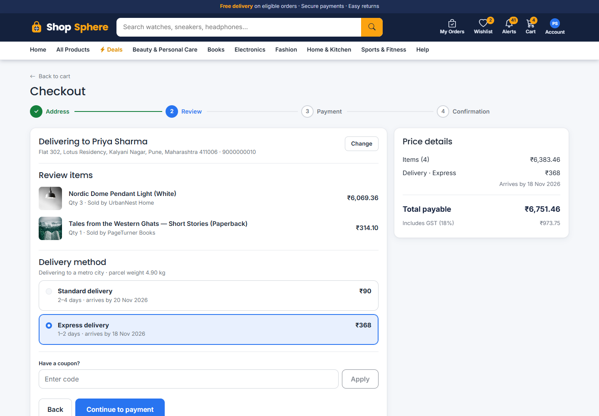
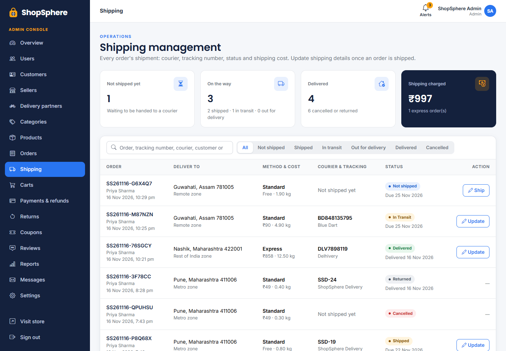
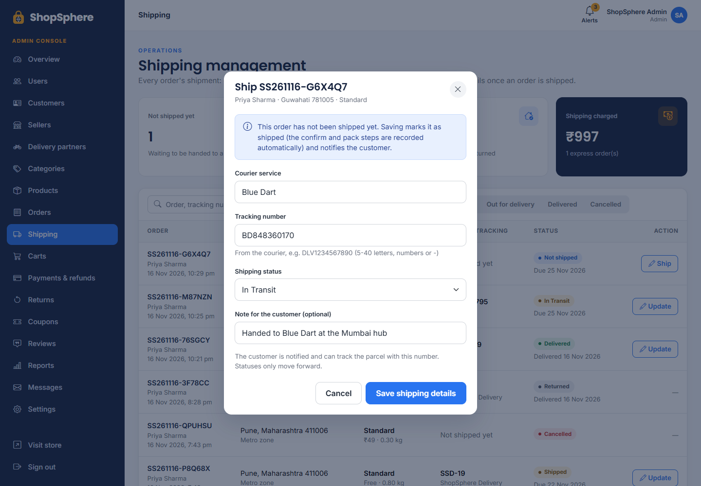
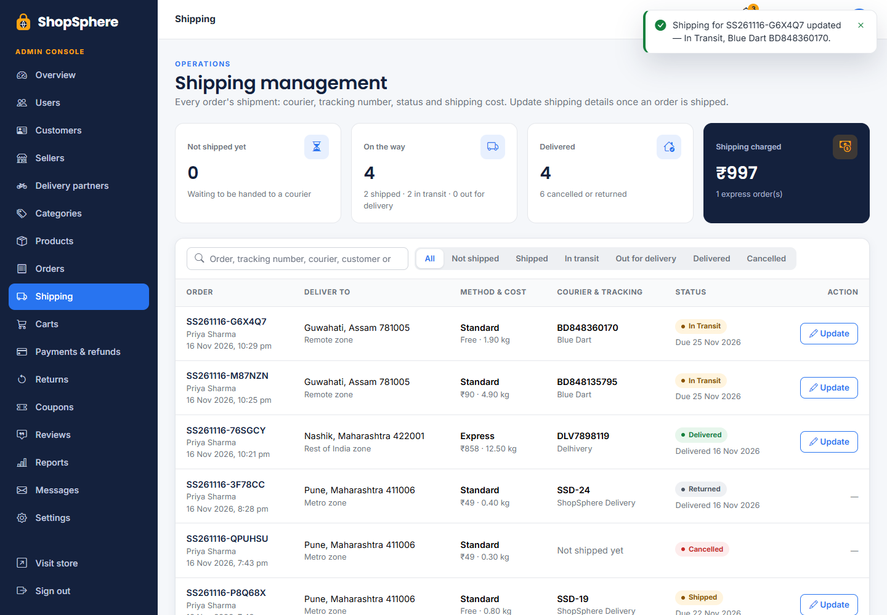
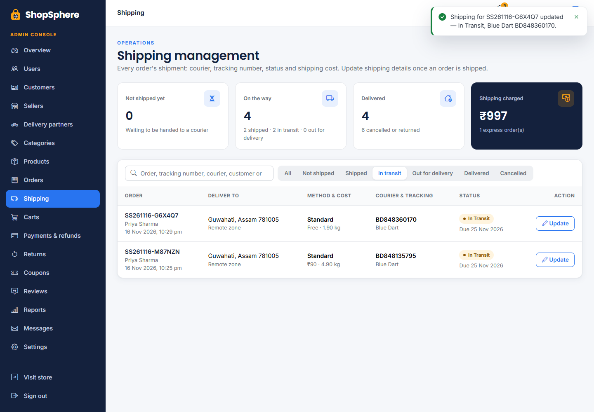
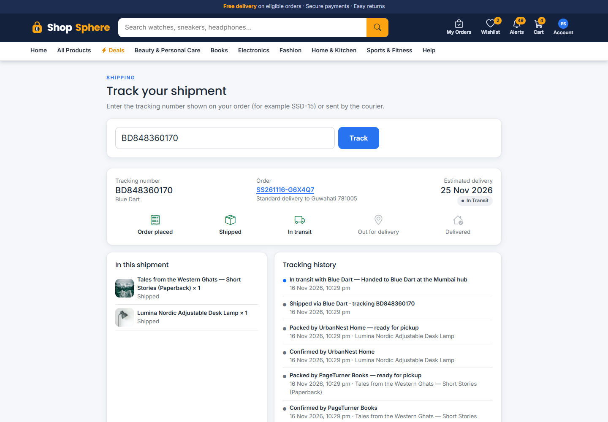
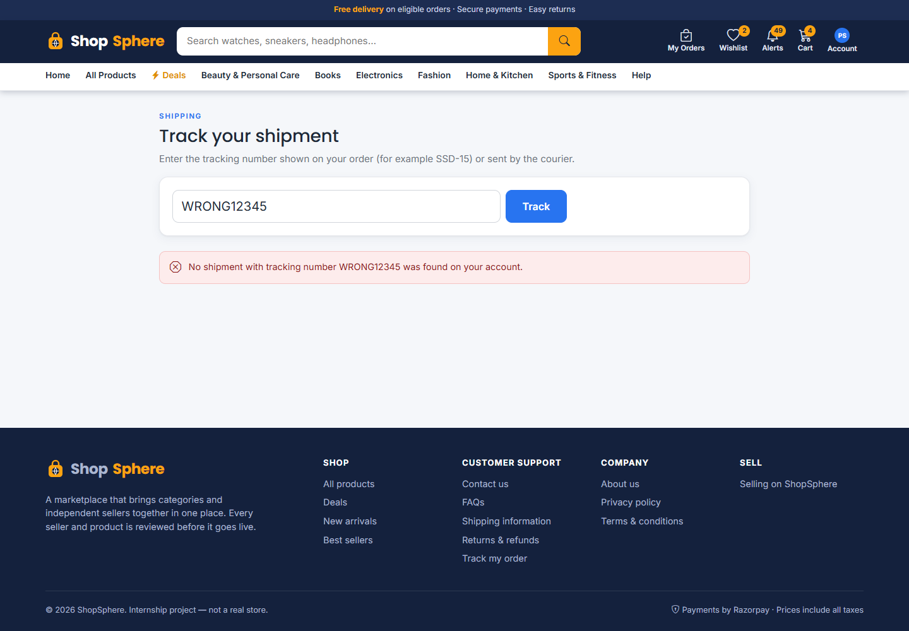
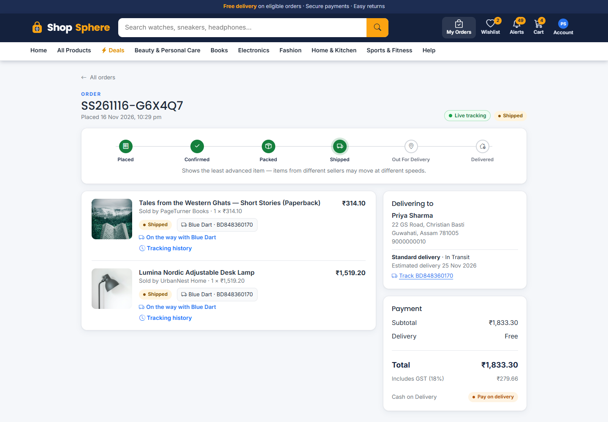
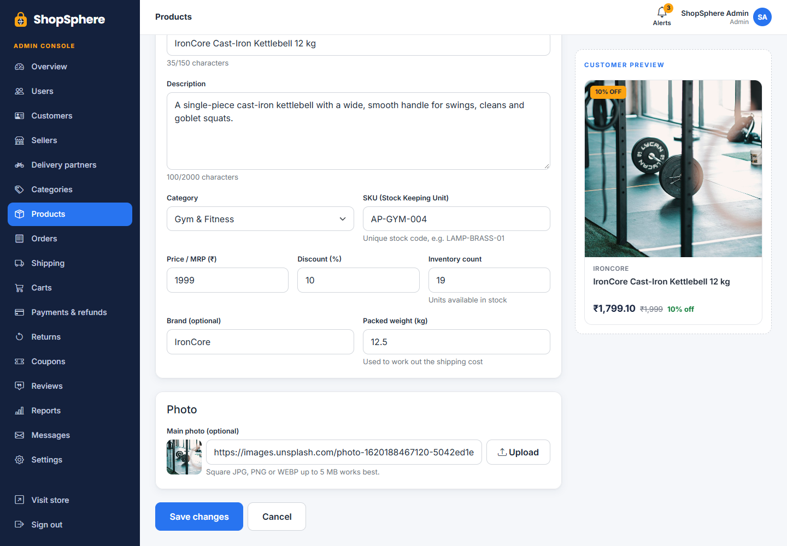

| Item | Details |
|---|---|
| Candidate | Anil Nayak |
| Internship | ITVedant / Vibgyor Advisors integrated internship |
| Project / Module | ShopSphere — Shipping Management (checkout, admin console, customer tracking) |
| Stack | React 19 + Vite · Java 17, Spring Boot 4, JWT · MySQL (ecommerce_intern, table shipping) |
Repository: https://github.com/anilnayak9969-cmd/ShopSphere
Module code: ShippingCalculator, ShippingServiceImpl, ShippingController, Shipment (table shipping), ShipmentRepository, ShippingDtos, enums ShippingMethod / DeliveryZone / ShippingStatus; frontend pages/admin/AdminShipping.jsx, pages/TrackShipment.jsx, pages/Checkout.jsx (delivery method), services/shippingService.js; SQL in DataBase/queries.sql section 13; this document in Docs/ShippingManagement.
Website: https://host-shop-sphere.vercel.app/ — admin: Admin console → Shipping; customer: Track my order in the footer.
Before this assignment ShopSphere charged one flat delivery fee (₹49, free over ₹499) and kept a courier and tracking number on each order item, filled in by sellers or delivery partners. There was no shipping table, no cost by weight, place or speed, no shipping dashboard and no way to track a parcel by its number. Everything marked ADDED was built for this assignment.
| Requirement | How ShopSphere implements it | Status |
|---|---|---|
| 1. Shipping cost calculation by weight, delivery location and shipping method | Every product has a packed weight ADDED. At checkout the delivery address decides the zone (metro city / rest of India / remote area) and the customer chooses Standard or Express delivery; both prices and arrival dates are shown and the chosen one is charged ADDED. Rules in section 4.1. | Implemented |
| 2. Shipping dashboard (admin) | Admin console → Shipping ADDED: cards (not shipped, on the way, delivered, shipping charged), search, status filter, and a table of every order with destination and zone, method, cost, weight, courier, tracking number, status and due date. | Implemented |
| 3. Track shipment (customer) | Track my order page ADDED: the customer enters a tracking number and sees the courier, status, estimated delivery, progress steps, the items in the parcel and the full tracking history. Only the customer's own parcels can be tracked. | Implemented |
| 4. Update shipping information (admin) | Ship / Update on the dashboard ADDED: courier service, tracking number, status (Shipped → In transit → Out for delivery → Delivered, forward only) and a note. The order and its items move with it, and the customer is notified. | Implemented |
Database design: table shipping | Table shipping with every assignment column plus method, zone, weight and dates ADDED; one row per order, existing orders back-filled. See Appendix A. | Implemented |
The cost depends on three things: the weight of the parcel (sum of each product's packed weight × quantity), the delivery location (zone from the city, state and PIN code) and the shipping method. The base fee and free-delivery threshold come from Admin → Settings (₹49 and ₹499 by default).
| Factor | Rule |
|---|---|
| Metro city | Base fee ₹49 (Mumbai, Delhi, Bengaluru, Chennai, Kolkata, Hyderabad, Pune, Ahmedabad and nearby) |
| Rest of India | Base fee + ₹20 |
| Remote area | Base fee + ₹50 (North-East, Jammu & Kashmir, Ladakh, Andaman & Nicobar, Lakshadweep) |
| Weight | First 0.5 kg included; ₹15 for every started 0.5 kg above it |
| Standard delivery | Free when the order is ₹499 or more — heavy parcels still pay ₹15 per 0.5 kg above 2 kg. Metro 2–4 days, rest of India 4–6, remote 6–9. |
| Express delivery | Twice the zone + weight charge, at least ₹99, never free. Metro 1–2 days, rest of India 2–3, remote 3–5. |
Examples — 0.4 kg book, ₹300 order: Standard ₹49 (metro) / ₹69 (rest of India) / ₹99 (remote); Express ₹99 / ₹138. A 12.5 kg kettlebell to Nashik: Standard ₹315, Express ₹858.

Open Admin console → Shipping. The cards count parcels not shipped yet, on the way, and delivered, plus the total shipping charged. The table lists each order with where it goes (and its zone), method, cost and weight, courier and tracking number, and status with the due or delivered date. Search by order number, tracking number, courier, customer or city, or filter by status.






The order page also shows the delivery method, shipping status, estimated delivery and a Track link.

The product form has a Packed weight (kg) field (0.05–50 kg) that feeds the shipping cost.

| Situation | Result |
|---|---|
| Invalid PIN code at checkout | Enter a valid 6-digit PIN code |
| Tracking number not 5–40 letters, numbers or - | Tracking number must be 5-40 letters, numbers or - |
| Tracking number already used by another order | Tracking number … is already used by another order. (HTTP 409) |
| Moving a status backwards (e.g. In transit → Shipped) | A shipment cannot go back from In transit to Shipped. |
| Shipping a cancelled or returned order / an unpaid checkout | Refused — nothing to ship |
| Tracking a number that is not on the customer's account | No shipment with tracking number … was found on your account. (HTTP 404) |
| Dashboard or update used by a customer or seller | HTTP 403 — admin only |
| Cash on delivery order marked Delivered | Payment recorded as received |
Figures 1–9 were taken from the application running locally (React on localhost:5173, Spring Boot on localhost:8080, MySQL ecommerce_intern) with the demo customer Priya Sharma and the ShopSphere admin.
ShippingCalculatorTest (7) — zones, zone prices, weight steps, free standard delivery with the heavy-parcel charge, express pricing, delivery dates, base fee from settings. ShippingManagementTest (11) — quote, empty cart, shipping a pending order with the admin's courier, in transit, no backwards moves, duplicate tracking (409), cancelled orders, status sync, tracking by number, merged tracking history, another customer's number (404). Full backend suite: 125 tests, all passing.| Assignment column | Assignment type | ShopSphere column (shipping) | Meaning |
|---|---|---|---|
| shipping_id | int (pk, auto_increment) | shipping_id BIGINT PK | Unique identifier for each shipment |
| order_id | int (fk) | order_id BIGINT FK → orders, UNIQUE | The order being shipped (one shipment per order) |
| courier_service | varchar | courier_service VARCHAR(100) | Courier, e.g. Blue Dart, Delhivery |
| tracking_number | varchar | tracking_number VARCHAR(100), indexed | Number used to track the parcel |
| shipping_status | varchar | shipping_status ENUM | Pending, Shipped, In transit, Out for delivery, Delivered, Cancelled, Returned |
| shipping_cost | decimal | shipping_cost DECIMAL(12,2) | Amount charged for delivery |
| created_at | datetime | created_at DATETIME(6) | When the shipment was created (order placed) |
| updated_at | datetime | updated_at DATETIME(6) | Last change |
| ADDED | shipping_method, delivery_zone, weight_kg, estimated_delivery, shipped_at, delivered_at | Inputs of the cost calculation and the delivery dates | |
Also added: products.weight_kg DECIMAL(8,2) (packed weight, default 0.50 kg). On start-up, existing orders get a shipping row (courier, tracking and status from their items) and existing products get a weight by category.
-- Dashboard SELECT o.order_number, o.city, s.delivery_zone, s.shipping_method, s.weight_kg, s.shipping_cost, s.courier_service, s.tracking_number, s.shipping_status, s.estimated_delivery FROM shipping s JOIN orders o ON o.order_id = s.order_id WHERE o.status <> 'PENDING_PAYMENT' ORDER BY o.created_at DESC; -- Track by tracking number (own orders only) SELECT s.courier_service, s.shipping_status, s.estimated_delivery, o.order_number FROM shipping s JOIN orders o ON o.order_id = s.order_id WHERE UPPER(s.tracking_number) = UPPER('BD848360170') AND o.customer_id = 8; -- Update shipping information (one transaction; also copied to the order's items) UPDATE shipping SET courier_service = 'Blue Dart', tracking_number = 'BD848360170', shipping_status = 'IN_TRANSIT', updated_at = NOW(6) WHERE order_id = 22; UPDATE order_items SET courier_name = 'Blue Dart', tracking_number = 'BD848360170' WHERE order_id = 22 AND item_status = 'SHIPPED';
The full set, including the cost calculation in SQL and late shipments, is in DataBase/queries.sql section 13 (tested with ROLLBACK).
| Method | Path | Purpose |
|---|---|---|
| POST | /customer/shipping/quote | Standard and Express price for the cart and an address (customer) |
| POST | /customer/checkout | Places the order with shippingMethod and creates its shipment |
| GET | /customer/track/{trackingNumber} | Track a shipment (customer, own orders) |
| GET | /admin/shipping?status=&search=&page= | Shipping dashboard list |
| GET | /admin/shipping/summary | Dashboard cards |
| GET | /admin/shipping/{orderId} | One shipment |
| PUT | /admin/shipping/{orderId} | Update courier, tracking number and status |